Part I
Boston University
and/or
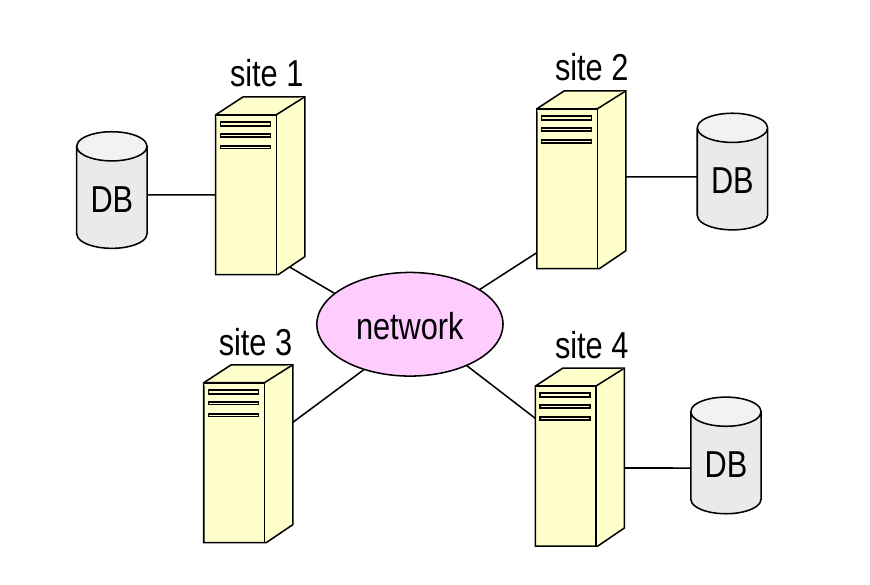
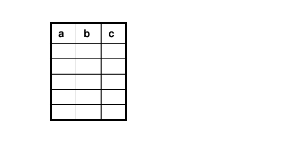
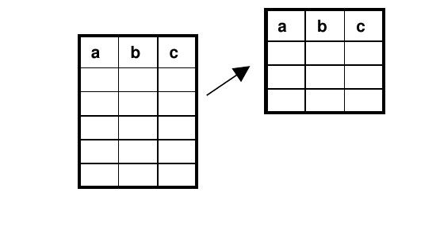
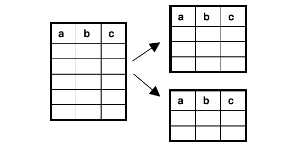
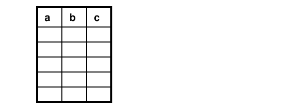
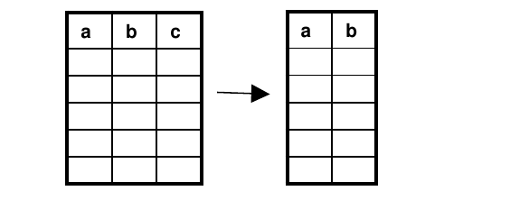
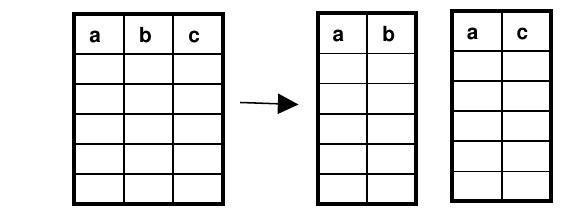
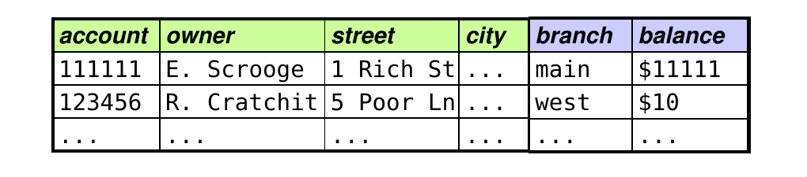
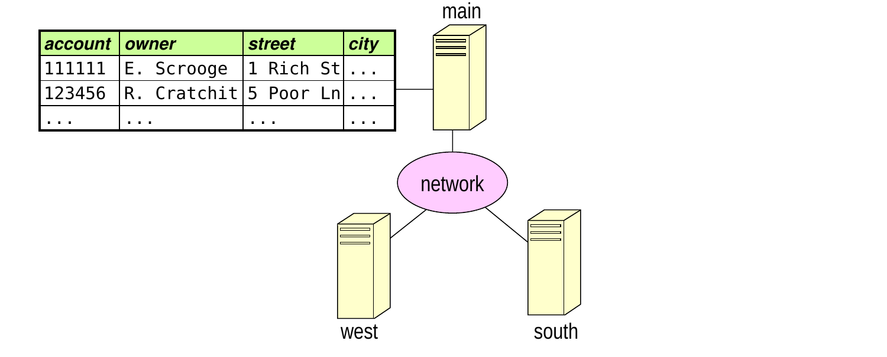
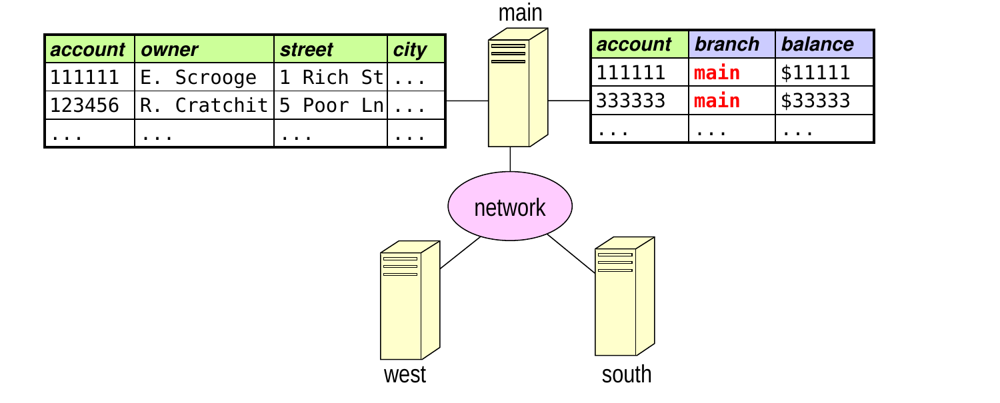
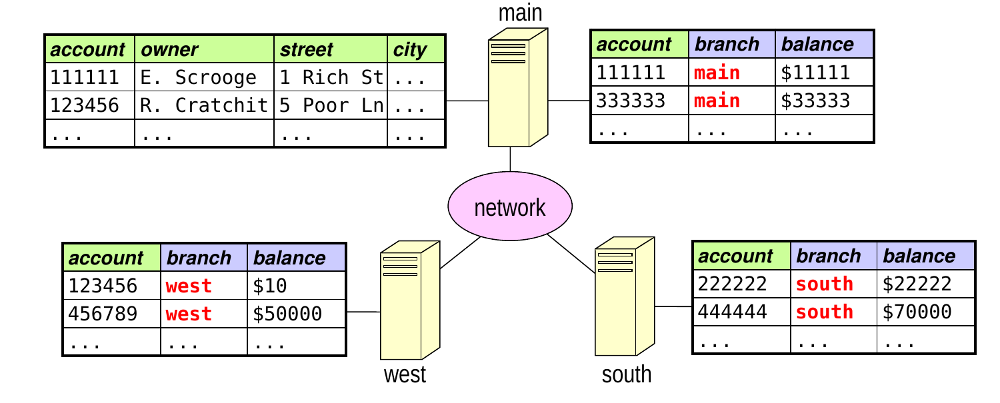
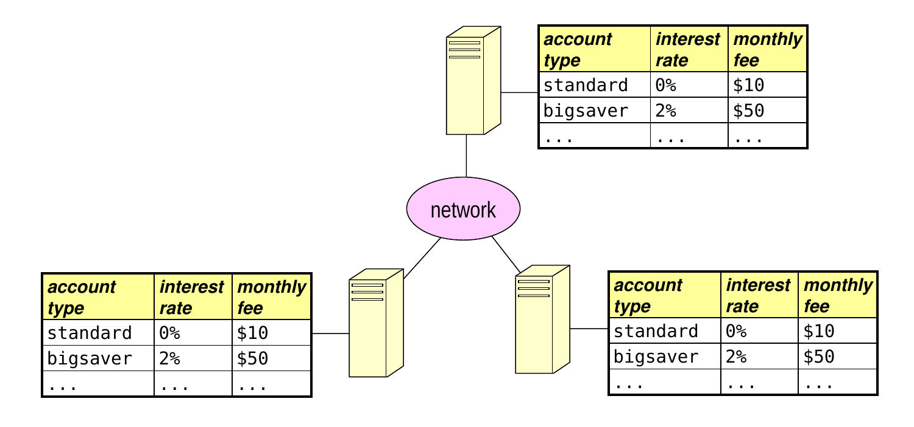
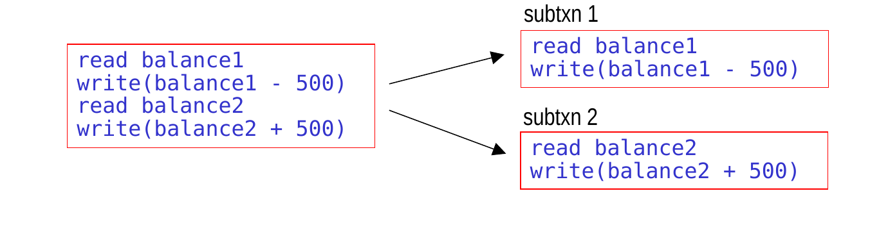
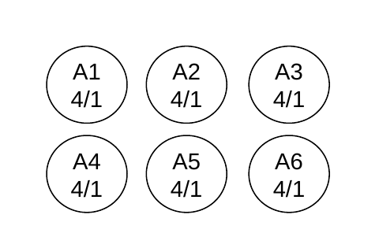
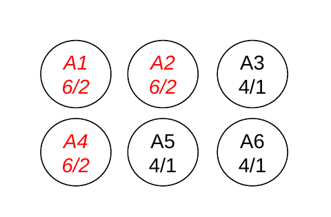
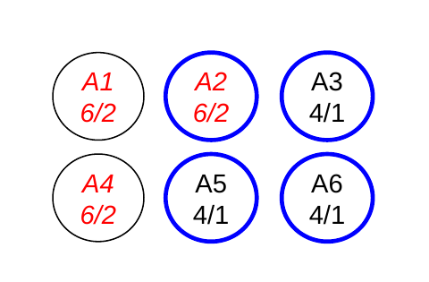
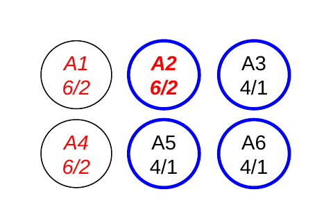
| number of copies accessed when reading |
number of copies accessed when writing |
|
|---|---|---|
| A. | 7 | 3 |
| B. | 5 | 5 |
| C. | 9 | 2 |
| D. | 4 | 8 |
E. both A and B F. both C and D
because the equivalent serial orderings could be different at different sites
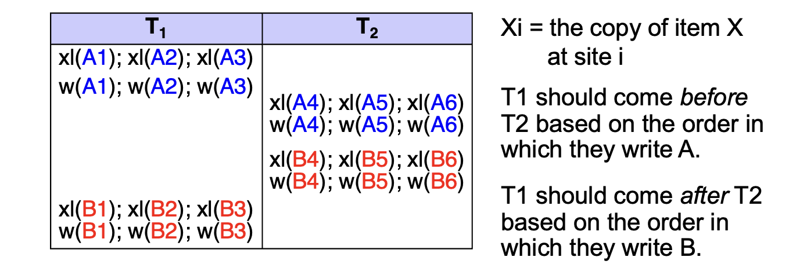